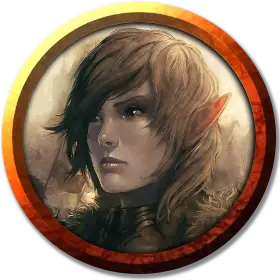

Ремолия Хевентри
Remallia Haventree
Средний Гуманоид (Солнечный эльф), хаотично-добрый, именной НИП

Класс Доспеха 12 (15 с доспехами мага)
Хиты 66 (12к8 + 12)
Скорость 30 футов
| мод | спас | ||
|---|---|---|---|
| СИЛ | 10 | +0 | +0 |
| ЛОВ | 14 | +2 | +2 |
| ТЕЛ | 13 | +1 | +1 |
| мод | спас | ||
|---|---|---|---|
| ИНТ | 18 | +4 | +8 |
| МДР | 15 | +2 | +6 |
| ХАР | 17 | +3 | +3 |
Навыки История +8, Магия +8, Обман +7, Убеждение +7
Чувства тёмное зрение 60 футов, пассивное Восприятие 12
Языки Общий, Дварфийский, Драконий, Полуросликов, Эльфийский
Опасность 9 (5000 опыта)
Бонус мастерства +4
Особенности
Особое снаряжение. Ремолия владеет статуэткой чудесной силы (серебряный ворон).
Наследие фей. Ремолия совершает с преимуществом спасброски от очарования, и магия не может его усыпить.
Использование заклинаний. Ремолия является заклинателем 13-го уровня. Её базовой характеристикой является Интеллект (Сл спасброска от заклинания 16, +8 к попаданию атаками заклинаниями). У неё подготовлены следующие заклинания волшебника:
• Заговоры (неограниченно): волшебная рука, пляшущие огоньки, починка, сообщение, луч холода.
• 1 уровень (4 ячейки): сигнал тревоги, доспехи мага, волшебная стрела, щит*.
• 2 уровень (3 ячейки): волшебный замок,* невидимость.
• 3 уровень (3 ячейки): контрзаклинание, рассеивание магии, огненный шар.
• 4 уровень (3 ячейки): изгнание, каменная кожа.
• 5 уровень (2 ячейки): конус холода, силовая стена.
• 6 уровень. (1 ячейка): окаменение, сфера неуязвимости*.
• 7 уровень (1 ячейка): знак,* телепортация.
*Заклинание Ограждения уровня 1 или выше.
Магическая защита. У Ремолии есть магическая защита, у которой есть 30 хитов. Всякий раз, когда оградитель получает урон, защита получает урон вместо неё. Если хиты защиты падают до 0, Ремолия получает оставшийся урон. Когда Ремолия накладывает заклинание Ограждения 1–го уровня или выше, защита восстанавливает хиты, равные удвоенному уровню заклинания.
Действия
Кинжал. Рукопашная или дальнобойная атака оружием: +6 к попаданию, досягаемость 5 футов или дистанция 20/60 футов, одна цель. Попадание: Колющий урон 4 (1к4 + 2).
Описание
Ремолия (друзья зовут её Реми) — глава дома Ульбринтер и путеводный светоч Арфистов в Вотердипе. Она стала бороться за добро в городе после того, как ассасины убили её мужа Артагаста Ульбринтера и уничтожили его останки. Она солнечный эльф, у неё двое взрослых детей (полуэльф Артиус, который учится музыке в Сильверимуне, и полуэльфийка Серенор, которая живёт в Муншей на острове Аларон с мужем и дочерью). У леди Хевентри есть горстка верных слуг и лазутчиков.
Реми проводит тайные собрания Арфистов у себя на вилле, защищённой всевозможными заклинаниями.
У неё есть серебряный ворон — чудесная статуэтка, с её помощью она рассылает послания лазутчикам Арфистов по всему городу.